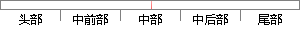

语音信号的能量不是一直不变的，并且各个音之间的能量存在差异，所以可以判断出语音信号的个性特点。
片段位置图

相似结果|
1
原句片段：语音信号的能量不是一直不变的，并且各个音之间的能量存在差异，所以可以判断出语音信号的个性特点。
相似片段 1：语音信号的能量不是一直不变的,并且各 个音之间的能量存在差异。 因此可以研究短时能量, 进而判断出语音信号的个性 特点。用En 代表第n 帧语音信号x(m)的短时...
|
※ 片段修改建议 ※
近似词参考：- 信号：旌旗灯号
- 一直：一向 不停
- 不变：稳定
- 并且：而且
- 差异：差别 悬殊
- 所以：以是
- 判断：判定 果断
- 信号：旌旗灯号
系统自动生成语句：语音旌旗灯号的能量不是一向稳定的，而且各个音之间的能量存在差别，以是可以判定出语音旌旗灯号的个性特点。
注：本片段修改建议为系统自动生成，仅供参考。